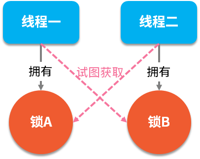

在并发编程中有两个重要的概念：线程和锁，多线程是一把双刃剑，它在提高程序性能的同时，也带来了编码的复杂性，对开发者的要求也提高了一个档次。而锁的出现就是为了保障多线程在同时操作一组资源时的数据一致性，当我们给资源加上锁之后，只有拥有此锁的线程才能操作此资源，而其他线程只能排队等待使用此锁。当然，在所有的面试中也都少不了关于“锁”方面的相关问题。
我们本课时的面试题是，如何手动模拟一个死锁？谈谈你对锁的理解？
典型回答
死锁是指两个线程同时占用两个资源，又在彼此等待对方释放锁资源，如下图所示：

死锁的代码演示如下：
1 | import java.util.concurrent.TimeUnit; |
以上程序执行结果如下：
1 | 获取 lock1 成功 |
可以看出当我们使用线程一拥有锁 lock1的同时试图获取lock2，而线程二在拥有lock2的同时试图获取lock1，这样就会造成彼此都在等待对方释放资源，于是就形成了死锁。
锁是指在并发编程中，当有多个线程同时操作一个资源时，为了保证数据操作的正确性，我们需要让多线程排队一个一个的操作此资源，而这个过程就是给资源加锁和释放锁的过程，就好像去公共厕所一样，必须一个一个排队使用，并且在使用时需要锁门和开门一样。
考点分析
锁的概念不止出现在Java语言中，比如乐观锁和悲观锁其实很早就存在于数据库中了。锁的概念其实不难理解，但要真正的了解锁的原理和实现过程，才能打动面试官。
和锁相关的面试问题，还有以下几个：
- 什么是乐观锁和悲观锁？它们的应用都有哪些？乐观锁有什么问题？
- 什么是可重入锁？用代码如何实现？它的实现原理是什么？
- 什么是共享锁和独占锁？
知识扩展
1.悲观锁和乐观锁
悲观锁指的是数据对外界的修改采取保守策略，它认为线程很容易会把数据修改掉，因此在整个数据被修改的过程中都会采取锁定状态，直到一个线程使用完，其他线程才可以继续使用。
我们来看一下悲观锁的实现流程，以synchronized为例，代码如下：
1 | public class LockExample { |
我们使用反编译工具查到的结果如下：
1 | Compiled from "LockExample.java" |
可以看出被synchronized 修饰的代码块，在执行之前先使用monitorenter 指令加锁，然后在执行结束之后再使用monitorexit 指令释放锁资源，在整个执行期间此代码都是锁定的状态，这就是典型悲观锁的实现流程。
乐观锁和悲观锁的概念恰好相反，乐观锁认为一般情况下数据在修改时不会出现冲突，所以在数据访问之前不会加锁，只是在数据提交更改时，才会对数据进行检测。
Java 中的乐观锁大部分都是通过CAS（Compare And Swap，比较并交换）操作实现的，CAS是一个多线程同步的原子指令，CAS操作包含三个重要的信息，即内存位置、预期原值和新值。如果内存位置的值和预期的原值相等的话，那么就可以把该位置的值更新为新值，否则不做任何修改，我们在第05课时讲解 ReentrantLock时知道了它也是通过CAS实现的。Lock是乐观锁的典型实现案例。
CAS可能会造成ABA的问题，ABA问题指的是，线程拿到了最初的预期原值A，然而在将要进行
CAS的时候，被其他线程抢占了执行权，把此值从A变成了B，然后其他线程又把此值从B变成了A，然而此时的A值已经并非原来的A值了，但最初的线程并不知道这个情况，在它进行CAS的时候，只对比了预期原值为A就进行了修改，这就造成了ABA的问题。
以警匪剧为例，假如某人把装了100W现金的箱子放在了家里，几分钟之后要拿它去赎人，然而在趁他不注意的时候，进来了一个小偷，用空箱子换走了装满钱的箱子，当某人进来之后看到箱子还是一模一样的，他会以为这就是原来的箱子，就拿着它去赎人了，这种情况肯定有问题，因为箱子已经是空的了，这就是ABA的问题。
ABA的常见处理方式是添加版本号，每次修改之后更新版本号，拿上面的例子来说，假如每次移动箱子之后，箱子的位置就会发生变化，而这个变化的位置就相当于“版本号”，当某人进来之后发现箱子的位置发生了变化就知道有人动了手脚，就会放弃原有的计划，这样就解决了ABA的问题。
JDK在1.5时提供了AtomicStampedReference 类也可以解决ABA的问题，此类维护了一个“版本号”Stamp，每次在比较时不止比较当前值还比较版本号，这样就解决了ABA的问题。
相关源码如下：
1 | public class AtomicStampedReference<V> { |
可以看出它在修改时会进行原值比较和版本号比较，当比较成功之后会修改值并修改版本号。
小贴士：乐观锁有一个优点，它在提交的时候才进行锁定的，因此不会造成死锁。
2.可重入锁
可重入锁也叫递归锁，指的是同一个线程，如果外面的函数拥有此锁之后，内层的函数也可以继续获取该锁。在Java 语言中ReentrantLock和synchronized都是可重入锁。
下面我们用synchronized来演示一下什么是可重入锁，代码如下：
1 | public class LockExample { |
以上代码的执行结果如下：
1 | main：执行 reentrantA |
从结果可以看出reentrantA 方法和reentrantB方法的执行线程都是“main”，我们调用了reentrantA方法，它的方法中嵌套了reentrantB，如果synchronized是不可重入的话，那么线程会被一直堵塞。
可重入锁的实现原理，是在锁内部存储了一个线程标识，用于判断当前的锁属于哪个线程，并且锁的内部维护了一个计数器，当锁空闲时此计数器的值为0，当被线程占用和重入时分别加1，当锁被释放时计数器减1，直到减到0时表示此锁为空闲状态。
3.共享锁和独占锁
只能被单线程持有的锁叫独占锁，可以被多线程持有的锁叫共享锁。
独占锁指的是在任何时候最多只能有一个线程持有该锁，比如 ReentrantLock 就是独占锁，而
ReadWriteLock 读写锁允许同一时间内有多个线程进行读操作，它就属于共享锁。
独占锁可以理解为悲观锁，当每次访问资源时都要加上互斥锁，而共享锁可以理解为乐观锁，它放宽了加锁的条件，允许多线程同时访问该资源。
小结
本课时我们讲了悲观锁和乐观锁，其中悲观锁的典型应用为synchronized，而ReentrantLock为乐观锁的典型应用，乐观锁可能会导致ABA的问题，常见的解决方案是添加版本号来防止ABA问题的发生；同时，还讲了可重入锁，在Java中，synchronized和ReentrantLock 都是可重入锁；最后讲了独占锁和共享锁，其中独占锁可以理解为悲观锁，而共享锁可以理解为乐观锁。